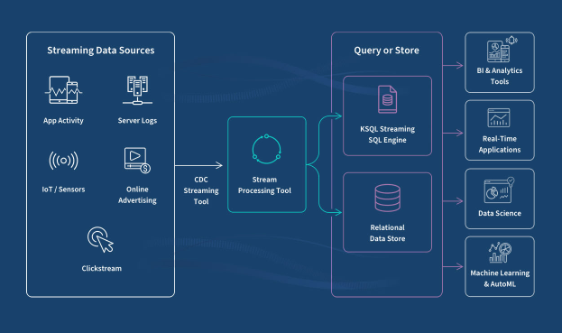
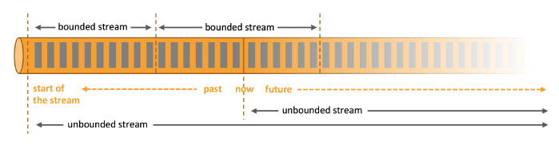
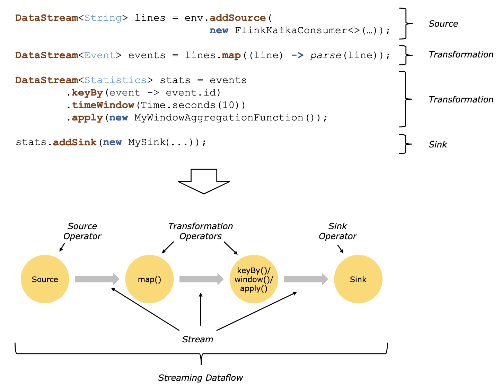
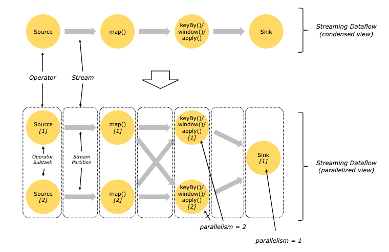
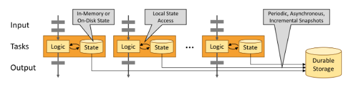
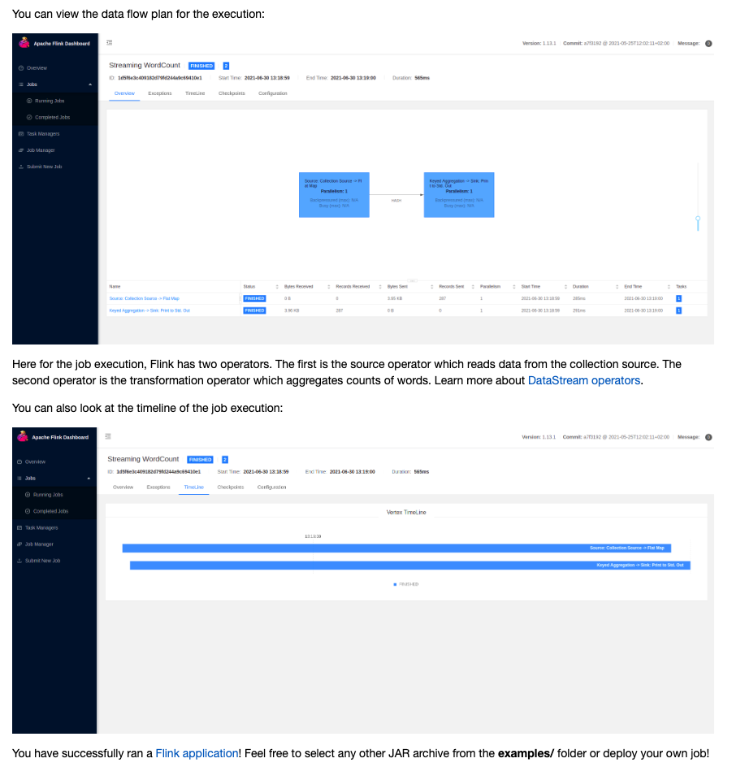
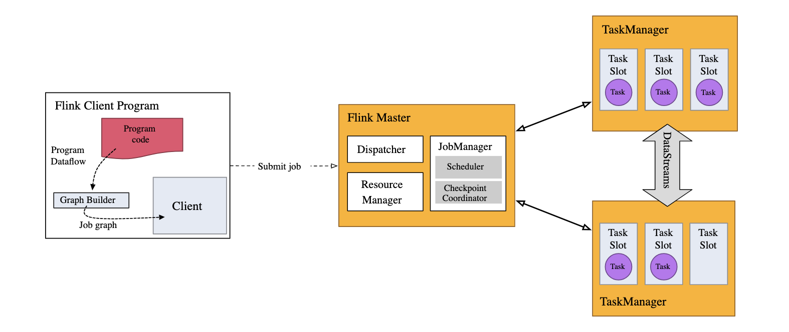

Infrastructure • Flink
- Overview
- Stream Processing
- Parallel Dataflows in Flink
- Stateful Stream Processing
- Fault Tolerance via State Snapshots in Apache Flink
- Flink’s Web UI
- Flink terminology
- Examples
- DataStream API
- Key Flink Concepts and Examples
- Interview Questions
Overview
- Streaming refers to the continuous flow of data that is processed in real-time or near real-time as it is generated. Unlike batch processing, which handles large volumes of data at once, streaming processes data incrementally, making it suitable for applications that require timely updates and immediate response.
- As we can see in the image below (source), streaming data continuously flows from a source to a sink at a very high speed.

- Recommender systems benefit from real-time data processing to instantly update recommendations based on users’ recent activities. Flink processes large streams of events (like clicks, purchases, or views) in real-time, allowing systems to dynamically adjust the content or product suggestions shown to a user.

- As we can see in the image above (source), an unbounded stream, in the context of data processing, refers to a continuous, never-ending flow of data that is processed in real-time. Unbounded streams do not have a defined beginning or end as the name might suggest.
- There are two families of processing here, batch and stream, and we will look at them in detail below.
What is Apache Flink?
- Apache Flink is a powerful stream-processing framework that provides robust data processing capabilities in real-time and batch processing modes. It is designed to handle large-scale data processing with low latency and high throughput.
- Flink stands out due to its ability to process data streams and perform complex event processing, making it suitable for applications requiring timely and accurate data processing.
Stream Processing
- Stream processing involves analyzing and acting on data in real time as it flows from the source to the destination. This technique is particularly useful in scenarios where immediate response is required, such as monitoring systems for quick alerts on system health issues, financial trading platforms for executing trades based on real-time market data, or recommendation systems updating user suggestions based on their current interactions.

- The image above (source) shows how Flink does stream processing.
Continuous Processing Techniques in Stream Processing
-
Windowing: One of the foundational techniques in stream processing is windowing, which groups together events that occur within a specified time frame or are triggered by a certain number of events. This is crucial for performing calculations like averages or sums over a continuous stream.
- Tumbling Windows: These are fixed-sized, non-overlapping windows that reset after each period. For instance, calculating a simple average of transaction values every 5 minutes.
- Sliding Windows: These overlap and slide over the data stream, allowing calculations over windows that move over time. For example, a moving average of stock prices where the window might slide every minute over a 10-minute span.
- Session Windows: Dynamically sized windows that group events by activity sessions. If no event occurs within a certain timeout period, the window is closed.
-
State Management: Continuous processing requires maintaining state over the course of a stream. For real-time applications, managing state (like the sum of elements or the last N elements for a moving average) is vital. Systems like Flink manage state with fault tolerance, ensuring that state information is not lost even in the event of a system failure.
-
Time Handling: Accurate time handling is critical, especially when processing events that don’t arrive in order or at predictable intervals. Stream processing frameworks handle this with:
- Event Time: The time when the event actually occurred.
- Processing Time: The time when the event is processed.
- Ingestion Time: The time when the event is ingested into the processing system.
Event time is particularly useful for accurate historical analyses or when exact timing of events is crucial, as in financial trading.
-
Complex Event Processing (CEP): This involves detecting patterns or combinations of events. For example, if a financial transaction exceeds a certain threshold followed by another transaction within a minute from the same user, an alert might be triggered.
-
Moving Averages: A specific example of continuous processing is calculating moving averages, which can be used to smooth out short-term fluctuations and highlight longer-term trends in data. This is often used in stock market analysis, sensor data monitoring, and more.
- Simple Moving Average (SMA): The unweighted mean of the previous N data points.
- Exponential Moving Average (EMA): Gives more weight to recent data points, making it more responsive to new information.
Example: Calculating a Moving Average for Stock Prices
Using a stream processing framework like Apache Flink, you could set up a job to calculate a moving average of stock prices in real-time. Here’s a simplified example of how this might be set up:
DataStream<StockPrice> stockStream = env.addSource(new FlinkKafkaConsumer<>("stock-ticker", new SimpleStringSchema(), properties));
DataStream<Double> movingAverage = stockStream
.keyBy(stock -> stock.getSymbol())
.window(TumblingEventTimeWindows.of(Time.minutes(5)))
.aggregate(new AverageAggregate());
movingAverage.print();
In this setup:
- Stock prices are consumed from a Kafka topic.
- The stream is keyed by stock symbol, ensuring calculations are performed per stock.
- A tumbling window of 5 minutes is used to calculate the average.
- The
AverageAggregatewould be a custom aggregator that computes the average price within the window.
Parallel Dataflows in Flink
-
The image below (source), illustrates how Flink runs it’s dataflows in parallel. When a stream of data enters a Flink application, it is divided into multiple partitions, which can then be processed concurrently. 
-
Flink is designed to execute programs in a parallel and distributed manner. This parallelism is a core aspect of its architecture, allowing it to process large volumes of data efficiently. Let’s break down the key concepts involved in parallel dataflows in Flink. Let’s look at a few key concepts of that below:
1. Parallelism and Operator Subtasks:
- Parallelism: In Flink, parallelism refers to the number of parallel tasks that an operator is split into. Each parallel task is known as a subtask.
- Operator Subtasks: Each operator in a Flink program can have multiple subtasks, which run independently of one another. These subtasks can be executed on different threads and potentially on different machines or containers, enhancing the scalability and fault tolerance of the system.
Example:
If you have a map() operator with a parallelism of 4, it means there are 4 subtasks (or instances) of this operator running concurrently.
- Flink uses different patterns for transporting data between operators. The two primary patterns are:
2. One-to-One (Forwarding) Streams:
- Definition: In one-to-one streams, the data is passed directly from one operator to the next without changing the partitioning. This means that each subtask of the downstream operator receives data from exactly one subtask of the upstream operator.
- Order Preservation: The order of elements is preserved in one-to-one streams. For example, if subtask[1] of a Source operator produces data, subtask[1] of the downstream
map()operator will receive those elements in the same order.
Example:
DataStream<String> source = env.addSource(new SimpleStringSchema());
DataStream<String> mapped = source.map(value -> value.toUpperCase());
- In this example, if the
sourceandmap()have the same parallelism, each subtask ofsourceforwards its data to the corresponding subtask ofmap()in the same order.
3. Redistributing Streams:
- Definition: Redistributing streams change the partitioning of the data as it flows from one operator to another. This is achieved through operations like
keyBy(),broadcast(), orrebalance(). - Partitioning and Order: In redistributing streams, data from each subtask of the upstream operator can be sent to different subtasks of the downstream operator based on a certain partitioning strategy. The order of elements is preserved only within the sending and receiving subtasks pair.
Examples of Redistributing Streams:
keyBy(): Partitions the stream based on a key. Elements with the same key are sent to the same subtask of the downstream operator.broadcast(): Sends each element to all subtasks of the downstream operator.rebalance(): Randomly redistributes the elements to the downstream operator’s subtasks, ensuring an even distribution of data.
Example:
DataStream<String> source = env.addSource(new SimpleStringSchema());
DataStream<Tuple2<String, Integer>> keyedStream = source
.map(value -> new Tuple2<>(value, value.length()))
.keyBy(value -> value.f0)
.window(TumblingEventTimeWindows.of(Time.seconds(5)))
.sum(1);
- Here,
keyBy()redistributes the stream such that all elements with the same key go to the same window subtask. ThekeyBy()operation ensures that each key is processed by a specific subtask, allowing for stateful operations like windowing and aggregation.
Practical Example: Parallel Dataflow in a Word Count Application
-
To illustrate these concepts, let’s consider a simple word count application:
- Step 1: Source Operator
DataStream<String> text = env.readTextFile("path/to/input"); -
This source operator reads text data from a file. Suppose it has a parallelism of 2, meaning there are 2 subtasks reading the file in parallel.
- Step 2: Tokenization (
flatMap)DataStream<Tuple2<String, Integer>> tokenized = text .flatMap(new Tokenizer()) .setParallelism(2); // Same parallelism as source -
The
flatMapoperator splits each line into words. With a parallelism of 2, each subtask processes the data independently, preserving the order within each partition. - Step 3: Key By Word
DataStream<Tuple2<String, Integer>> wordCounts = tokenized .keyBy(value -> value.f0) .sum(1) .setParallelism(4); // Higher parallelism for scaling -
The
keyByoperation redistributes the data so that all occurrences of the same word are processed by the same subtask. The parallelism here is increased to 4, allowing better scalability. Each subtask now receives and sums the counts for a specific set of words. - Step 4: Sink Operator
wordCounts.writeAsText("path/to/output").setParallelism(4); - The sink operator writes the word counts to an output file. With a parallelism of 4, it matches the parallelism of the previous
sumoperator, ensuring efficient data processing and output.
Stateful Stream Processing
-
The image below (source), shows how Flink maintains state within it’s operations. 
-
Stateful stream processing in Apache Flink allows operators within a stream to maintain and update state based on the data they process. This feature is essential for operations where the handling of each event may depend on the outcome of previous events. Stateful processing enables a variety of sophisticated analytical applications, from simple metrics aggregation to complex conditional logic needed for fraud detection.
-
Each instance of a stateful operator in a Flink job manages a portion of the application’s state. This setup is akin to a sharded key-value store where each shard corresponds to a parallel instance of an operator. Events are distributed among these instances based on a key, typically a characteristic of the data which dictates how events are related and how state is maintained, such as a user ID or transaction ID.
-
The local management of state (each operator instance managing its state independently) allows Flink to provide high performance (low latency and high throughput), as state access does not involve network overhead or interaction with remote data stores. Here’s how Flink handles state:
- Local State Access: Each stateful operator instance accesses its state locally. If an event modifies the state, only the local state on that specific instance is affected.
- Physical Distribution: The physical distribution of instances (each potentially on different machines) provides natural scalability and fault tolerance.
- State Storage: State can be stored in memory (on the JVM heap) for fast access, or off-heap in efficiently organized on-disk data structures to handle larger states.
Example: Counting Events Per Minute
- Consider a Flink application that counts events per minute for real-time monitoring on a dashboard. Each event could represent a user action on a website, like clicking a button or loading a page.
Job Setup:
- Source Operator: Streams events into the job.
- KeyBy Operator: Keys events by some attribute, e.g., user ID.
- Stateful Operator (Window): Counts events per minute. Each instance handles counts for a specific set of user IDs.
- Sink Operator: Outputs the aggregated counts to a dashboard or database.
Illustrative Flink Code:
DataStream<Event> events = env.addSource(new FlinkKafkaConsumer<>("events", new SimpleStringSchema(), properties));
DataStream<Tuple2<String, Long>> counts = events
.keyBy(Event::getUserId)
.window(TumblingEventTimeWindows.of(Time.minutes(1)))
.process(new CountFunction());
counts.addSink(new FlinkKafkaProducer<>("output-topic", new SimpleStringSchema(), properties));
In this setup:
- Events are keyed by user ID, ensuring all events from a specific user are processed by the same operator instance.
- A time window of one minute is applied to count events.
- The count for each user and minute is emitted to a sink, which could be updating a real-time dashboard.
State Handling:
- Each parallel instance of the
processfunction maintains a local state counting events. This state is accessed and updated rapidly with each incoming event, solely within the local context of the instance.
Diagram Explanation and Job Parallelism
- Parallelism: The job is configured with a parallelism of two for the first three operators, meaning there are two instances running concurrently for each of these stages.
- Network Shuffle: A shuffle operation between the second and third operators ensures that events with the same key (user ID) are routed to the same instance of the third operator. This is crucial for correct state management and consistent counting per user.
- Sink Parallelism: The final sink might have a parallelism of one, consolidating output to a single point before dispatching it, e.g., to a database or dashboard.
Fault Tolerance via State Snapshots in Apache Flink
-
Apache Flink ensures fault tolerance and provides exactly-once processing semantics through an effective mechanism involving state snapshots and stream replay. This approach is critical for maintaining data integrity and consistency, especially in environments where data accuracy and system reliability are paramount.
-
Flink’s fault tolerance mechanism is designed around the concept of state snapshots and checkpoints. Here’s a step-by-step explanation of how this works:
-
State Snapshots: Periodically, Flink captures the complete state of the distributed pipeline. This includes not only the current state of each operator in the job graph but also the positions (offsets) within the input streams from which data has been read. These snapshots encapsulate the entire processing state at a specific point in time.
-
Asynchronous Snapshots: The snapshots are taken asynchronously, meaning that they do not block the ongoing data processing. This is vital for performance, ensuring that the snapshot process does not cause delays or downtime in stream processing.
-
Stream Replay: In the event of a failure (such as a machine crash or network issue), Flink uses these snapshots to recover the state of the distributed pipeline. The input streams to the job are rewound to the point recorded in the last successful snapshot.
-
State Restoration and Resumption: Once the state is restored, processing resumes, ensuring that no data is lost and that each record is processed exactly once. This resumption is seamless and maintains the integrity of the processing pipeline, ensuring that all state computations are consistent with the event history.
Example: Transaction Processing System
Consider a financial transaction processing system where each transaction must be processed exactly once for billing accuracy.
Flink Job Configuration:
- Source: Transactions enter the system from a Kafka topic.
- Processing: Transactions are processed to calculate billing amounts.
- Sink: Processed transactions are stored in a database.
Flink Code Snippet:
DataStream<Transaction> transactions = env
.addSource(new FlinkKafkaConsumer<>("transactions", new SimpleStringSchema(), properties))
.name("Transaction Source");
DataStream<ProcessedTransaction> processed = transactions
.keyBy(Transaction::getAccountId)
.map(new BillingMapper())
.name("Billing Processing");
processed.addSink(new JdbcSink<>("jdbc-url", "insert-query", new JdbcStatementBuilder<>()))
.name("Database Sink");
State Snapshot Configuration:
env.enableCheckpointing(5000); // enable checkpointing every 5000 milliseconds
In this configuration:
- Every 5 seconds, Flink takes a snapshot of the entire state of the job, including the offsets of the transactions in the Kafka topic and the current state of each billing computation.
- If there is a failure, Flink restores each operator to its state from the last snapshot and replays the transactions from the corresponding Kafka offset, ensuring no transaction is missed or double-processed.
Flink’s Web UI

Flink terminology
- Checkpoint Storage
- The location where the State Backend will store its snapshot during a checkpoint, such as the Java Heap of the JobManager or a filesystem like HDFS or S3. Checkpoints are essential for Flink’s fault tolerance. During checkpoints, the state of the application is snapshot and stored in the specified storage. This allows Flink to recover and restore the state of the application in case of failures, ensuring exactly-once processing guarantees.
- Flink Application Cluster
- A dedicated Flink Cluster that executes Flink Jobs from one Flink Application exclusively. The lifetime of the Flink Cluster is tied to the lifetime of the Flink Application. This cluster type is suitable for applications that require isolated resources and dedicated clusters for execution. It ensures that the resources are solely dedicated to a single application, enhancing performance and reliability.
- Flink Job Cluster
- A dedicated Flink Cluster that executes a single Flink Job. The lifetime of the Flink Cluster is tied to the lifetime of the Flink Job. This deployment mode has been deprecated since Flink 1.15. Previously used for isolating jobs for better performance and resource management. Deprecated in favor of more flexible deployment modes like Application and Session clusters.
- Flink Cluster
- A distributed system consisting of (typically) one JobManager and one or more Flink TaskManager processes. The JobManager orchestrates the job execution, while TaskManagers execute the tasks. Clusters can be deployed on various environments including local setups, on-premise data centers, or cloud platforms.
- Event
- A statement about a change in the state of the domain modeled by the application. Events can be input and/or output of a stream or batch processing application. Events are special types of records. In stream processing, events represent the fundamental units of data that flow through the system. Examples include user clicks, sensor readings, or financial transactions.
- ExecutionGraph
- See Physical Graph. Represents the execution plan of a Flink job, detailing how logical operators are translated into physical tasks for execution.
- Function
- Functions are implemented by the user and encapsulate the application logic of a Flink program. Most Functions are wrapped by a corresponding Operator. Examples include MapFunction, FilterFunction, and ReduceFunction. These functions define the transformations and computations applied to the data streams.
- Instance
- Describes a specific instance of a specific type (usually Operator or Function) during runtime. Multiple instances of the same operator or function can run in parallel to process different partitions of the data, enhancing scalability and performance.
- Flink Application
- A Java application that submits one or multiple Flink Jobs from the main() method (or by other means). Applications are submitted to Flink clusters for execution. They can either run in session clusters, application clusters, or job clusters.
- Flink Job
- The runtime representation of a logical graph (also often called a dataflow graph) that is created and submitted by calling execute() in a Flink Application. Jobs define the end-to-end data processing workflow and include all necessary transformations and computations.
- JobGraph
- See Logical Graph. Represents the logical dataflow graph of a Flink job, consisting of operators and the data flow between them.
- Flink JobManager
- The orchestrator of a Flink Cluster. It contains three distinct components: Flink Resource Manager, Flink Dispatcher, and one Flink JobMaster per running Flink Job. The JobManager handles job submission, resource allocation, and coordination of distributed tasks. It is critical for maintaining the state and progress of Flink jobs.
- Flink JobMaster
- A component running in the JobManager responsible for supervising the execution of the Tasks of a single job. Each JobMaster manages the lifecycle of a job, including task scheduling, state management, and fault tolerance mechanisms.
- JobResultStore
- A Flink component that persists the results of globally terminated (i.e., finished, canceled, or failed) jobs to a filesystem, allowing the results to outlive a finished job. Ensures that job results are retained and can be accessed even after the job has completed, useful for auditing, recovery, and debugging.
- Logical Graph
- A directed graph where the nodes are Operators and the edges define input/output relationships of the operators and correspond to data streams or data sets. Logical graphs represent the high-level data processing logic before being translated into a physical execution plan.
- Managed State
- Application state that has been registered with the framework. For Managed State, Apache Flink will take care of persistence and rescaling among other things. Managed state is automatically backed up and restored by Flink, facilitating reliable and consistent stateful stream processing.
- Operator
- Node of a Logical Graph. An Operator performs a certain operation, usually executed by a Function. Sources and Sinks are special Operators for data ingestion and data egress. Operators include transformations like map, filter, reduce, and custom user-defined functions.
- Operator Chain
- Consists of two or more consecutive Operators without any repartitioning in between. Operator chains optimize execution by reducing overhead, as operators within the same chain forward records directly to each other.
- Partition
- An independent subset of the overall data stream or data set. Data is divided into partitions to parallelize processing. Each partition is processed independently by a sub-task.
- Physical Graph
- The result of translating a Logical Graph for execution in a distributed runtime. Nodes are tasks, and edges indicate input/output relationships or partitions. Represents the actual execution plan on the Flink cluster.
- Record
- Constituent elements of a data set or data stream. Records are processed by operators and functions. In stream processing, records typically correspond to individual events.
- (Runtime) Execution Mode
- DataStream API programs can be executed in one of two execution modes: BATCH or STREAMING. Batch mode processes finite datasets, while streaming mode processes unbounded data streams continuously.
- Flink Session Cluster
- A long-running Flink Cluster that accepts multiple Flink Jobs for execution. The cluster remains active beyond the lifetime of any single job, suitable for environments with frequent job submissions.
- State Backend
- Determines how state is stored on each TaskManager. Options include in-memory storage or RocksDB for large state, impacting performance and scalability of stateful operations.
- Sub-Task
- A Task responsible for processing a partition of the data stream. Emphasizes the parallel nature of Flink, with multiple sub-tasks processing different partitions concurrently.
- Table Program
- Pipelines declared with Flink’s relational APIs (Table API or SQL). Allows for declarative data processing using SQL-like syntax, simplifying complex data transformations.
- Task
- Node of a Physical Graph, representing the basic unit of work executed by Flink’s runtime. Encapsulates one parallel instance of an Operator or Operator Chain, executed on a TaskManager.
- Flink TaskManager
- The worker processes of a Flink Cluster. Execute tasks, manage local state, and communicate with each other to exchange data between tasks. Each TaskManager runs multiple task slots.
- Transformation
- Applied on one or more data streams or data sets, resulting in one or more output data streams or data sets. Transformations include operations like map, filter, and reduce, defining how data is processed and transformed in a Flink job.
- UID
- A unique identifier of an Operator, provided by the user or determined from the structure of the job. Ensures consistent identification of operators, crucial for state management and job recovery.
- UID hash
- A unique identifier of an Operator at runtime, also known as “Operator ID” or “Vertex ID”. Used in logs, REST API, metrics, and for identifying operators within savepoints.
Examples
Stream Processing: Log Analysis
- One of the primary uses of Flink is stream processing. Imagine you’re tasked with analyzing server logs in real time to detect unusual activity, such as potential security breaches or system failures.
Example: You can set up Flink to continuously read logs as they are generated, using its DataStream API. Each log entry is treated as an event. Flink’s robust stream processing capabilities allow you to apply transformations and filters on the fly. For instance, you might want to filter out logs that show user login activities and apply a pattern detection algorithm to identify repeated failed login attempts from the same IP address within a short time span, indicating a possible brute force attack.
Flink Setup:
DataStream<String> logStream = env.readTextFile("path/to/log");
DataStream<String> warnings = logStream
.filter(log -> log.contains("Failed login"))
.keyBy(log -> log.split(" ")[1]) // Key by IP address
.window(TumblingEventTimeWindows.of(Time.minutes(1)))
.process(new BruteForceDetector());
In this snippet, BruteForceDetector is a custom function that checks if the count of failed attempts exceeds a certain threshold within each one-minute window, potentially triggering an alert or an automatic security response.
Event Time Processing: E-commerce Order Processing
Flink’s handling of event time is crucial for ensuring correct order processing in an e-commerce application, especially when dealing with out-of-order events due to network latency or service interruptions.
Example: Suppose your application takes orders from multiple geographical locations. Due to varying network conditions, these orders might reach your processing system at different times, not necessarily in the order they were placed. Using Flink’s event time capabilities, you can timestamp each order at the source (when the order was actually made), and Flink will process these orders in the correct sequence.
Flink Setup:
DataStream<Order> orders = env.addSource(new FlinkKafkaConsumer<>("orders", new SimpleStringSchema(), properties));
DataStream<Order> sortedOrders = orders
.assignTimestampsAndWatermarks(WatermarkStrategy.forBoundedOutOfOrderness(Duration.ofSeconds(5)))
.keyBy(order -> order.getUserId())
.window(TumblingEventTimeWindows.of(Time.minutes(5)))
.aggregate(new OrderAggregator());
- Here,
OrderAggregatormight be aggregating total spend per user over 5-minute windows, ensuring that no matter when the data arrives, the orders are accounted for in the period they actually occurred.
State Management and Fault Tolerance: User Session Analysis
Flink’s state management and fault tolerance features are especially useful when analyzing user behavior across sessions in applications like online media streaming services.
Example: In a streaming platform, you could use Flink to track user interactions (play, pause, stop) to provide personalized content recommendations. Each user session could be analyzed to determine the most watched genres or content types, adjusting recommendations in real time.
Flink Setup:
DataStream<Event> events = env.addSource(new FlinkKafkaConsumer<>("events", new SimpleStringSchema(), properties));
DataStream<UserProfile> userProfiles = events
.keyBy(event -> event.getUserId())
.mapWithState((event, state) -> {
UserProfile updatedProfile = updateProfileBasedOnEvent(event, state.get());
return Tuple2.of(updatedProfile, Some(updatedProfile));
});
In this setup, mapWithState allows you to maintain and update a user’s profile based on their actions, leveraging Flink’s managed state and automatic checkpointing to ensure state consistency across failures.
DataStream API

-
The DataStream API is a core component of Apache Flink designed for processing real-time data streams. This API allows developers to build applications that can process continuous flows of data, such as sensor outputs, user interactions on websites, or financial transactions, as they occur.
-
Stream Execution Environment
1. Setting Up the Execution Environment:
Every Flink application requires a specific type of execution environment to run. For streaming applications, this is provided by the StreamExecutionEnvironment. This environment is where all operations on your data streams are configured and executed.
final StreamExecutionEnvironment env = StreamExecutionEnvironment.getExecutionEnvironment();
2. Building a Job Graph:
When you develop a streaming application using the DataStream API, you essentially construct a job graph. This graph consists of various data stream transformations that define how your data is processed. Each transformation you apply (like filtering, aggregating, or joining data) adds a node to this graph.
3. Executing the Stream:
To run your application, you need to call env.execute(). This method packages your job graph and submits it to the Flink cluster.
env.execute("My Flink Job");
-
Job Manager: Once executed, the job graph is sent to the JobManager. This component is responsible for breaking down the job into smaller tasks and allocating these tasks to available Task Managers. The JobManager orchestrates the execution of different parts of your streaming application.
-
Task Managers: Task Managers are the workers that actually execute the tasks assigned to them. Each task is processed in what’s called a “task slot.” Task slots are the parallel units of execution within a Task Manager, allowing for concurrent execution of multiple parts of your application.
-
Task Execution: The Job Manager ensures that the tasks are distributed and balanced among available Task Managers, optimizing the use of resources and parallelizing the workload as much as possible. This distribution is crucial for handling large volumes of data efficiently.
-
Important Note: If you do not call
env.execute(), your Flink application is set up but never actually starts processing the data. It’s essential to include this call to kick off the execution of your data processing logic.
1. DataStream API
The DataStream API is the core of Flink’s stream processing capabilities. It allows you to define data transformations, operations, and the flow of data through various stages of a pipeline.
StreamExecutionEnvironment env = StreamExecutionEnvironment.getExecutionEnvironment();
DataStream<String> text = env.readTextFile("path/to/textfile.txt");
DataStream<Tuple2<String, Integer>> wordCounts = text
.flatMap(new Tokenizer())
.keyBy(value -> value.f0)
.sum(1);
wordCounts.print();
env.execute("Word Count Example");
2. Event Time
Event time is the actual time when an event occurs, as recorded by the event producer. It is crucial for ensuring accurate event-time processing and analytics, especially in scenarios where the timing of events is significant.
DataStream<Event> events = env.addSource(new EventSource());
WatermarkStrategy<Event> strategy = WatermarkStrategy
.<Event>forBoundedOutOfOrderness(Duration.ofSeconds(20))
.withTimestampAssigner((event, timestamp) -> event.timestamp);
DataStream<Event> withTimestampsAndWatermarks = events.assignTimestampsAndWatermarks(strategy);
3. Windows
Windows in Flink allow for the aggregation of events over specified periods. This is useful for summarizing data over time, such as computing averages or counts over time intervals.
DataStream<SensorReading> sensorData = env.addSource(new SensorSource());
DataStream<Tuple3<String, Long, Double>> maxReadings = sensorData
.keyBy(r -> r.id)
.window(TumblingEventTimeWindows.of(Time.minutes(1)))
.maxBy("temperature");
maxReadings.print();
4. Window Functions
Window functions operate on the events within a window to perform computations, such as aggregations or custom logic.
DataStream<SensorReading> sensorData = env.addSource(new SensorSource());
DataStream<Tuple3<String, Long, Double>> maxReadings = sensorData
.keyBy(r -> r.id)
.window(TumblingEventTimeWindows.of(Time.minutes(1)))
.process(new MaxTemperature());
public static class MaxTemperature extends ProcessWindowFunction<SensorReading, Tuple3<String, Long, Double>, String, TimeWindow> {
@Override
public void process(String key, Context context, Iterable<SensorReading> elements, Collector<Tuple3<String, Long, Double>> out) {
double maxTemp = Double.MIN_VALUE;
for (SensorReading r : elements) {
maxTemp = Math.max(maxTemp, r.temperature);
}
out.collect(new Tuple3<>(key, context.window().getEnd(), maxTemp));
}
}
5. Late Events
Late events are events that arrive after the watermark has passed. Flink allows handling late events by configuring allowed lateness or using side outputs to collect them.
OutputTag<SensorReading> lateReadingsTag = new OutputTag<SensorReading>("late-readings") {};
SingleOutputStreamOperator<SensorReading> result = sensorData
.keyBy(r -> r.id)
.window(TumblingEventTimeWindows.of(Time.minutes(1)))
.allowedLateness(Time.minutes(1))
.sideOutputLateData(lateReadingsTag)
.process(new MaxTemperature());
DataStream<SensorReading> lateReadings = result.getSideOutput(lateReadingsTag);
6. Connectors
Flink connectors integrate Flink with various data sources and sinks, enabling seamless data ingestion and output to systems like Kafka, Cassandra, and JDBC.
DataStream<String> kafkaStream = env
.addSource(new FlinkKafkaConsumer<>("topic", new SimpleStringSchema(), properties));
kafkaStream
.map(value -> new Tuple2<>(value, 1))
.keyBy(0)
.sum(1)
.addSink(new FlinkKafkaProducer<>("output-topic", new Tuple2SerializationSchema(), properties, FlinkKafkaProducer.Semantic.EXACTLY_ONCE));
7. Fault Tolerance
Flink provides fault tolerance through distributed snapshots and checkpointing. This ensures that the system can recover to a consistent state after a failure.
StreamExecutionEnvironment env = StreamExecutionEnvironment.getExecutionEnvironment();
env.enableCheckpointing(10000);
DataStream<String> text = env.readTextFile("path/to/textfile.txt");
DataStream<Tuple2<String, Integer>> wordCounts = text
.flatMap(new Tokenizer())
.keyBy(value -> value.f0)
.sum(1);
wordCounts.print();
env.execute("Fault Tolerant Word Count Example");
8. State Management
State management in Flink allows the system to keep track of information across operator instances. This state can be keyed, meaning it is partitioned by key, or operator state, which is scoped to the operator instance.
public static class CountWithTimeoutFunction extends RichFlatMapFunction<Tuple2<String, String>, Tuple2<String, Long>> {
private transient ValueState<Long> countState;
@Override
public void flatMap(Tuple2<String, String> value, Collector<Tuple2<String, Long>> out) throws Exception {
Long count = countState.value();
if (count == null) {
count = 0L;
}
count += 1;
countState.update(count);
out.collect(new Tuple2<>(value.f0, count));
}
@Override
public void open(Configuration parameters) {
ValueStateDescriptor<Long> descriptor = new ValueStateDescriptor<>(
"count", Long.class, 0L);
countState = getRuntimeContext().getState(descriptor);
}
}
Windows
Windows in Flink allow for the aggregation of events over specified periods. This is essential for summarizing data over time, such as computing averages, counts, or other statistics within a time frame. Windows can be defined in various ways:
- Tumbling Windows: Fixed-size, non-overlapping time windows.
- Sliding Windows: Fixed-size windows that overlap with a specified slide interval.
- Session Windows: Dynamic size, defined by a gap of inactivity between events.
Tumbling Windows Example
DataStream<SensorReading> sensorData = env.addSource(new SensorSource());
DataStream<Tuple3<String, Long, Double>> maxReadings = sensorData
.keyBy(r -> r.id)
.window(TumblingEventTimeWindows.of(Time.minutes(1)))
.maxBy("temperature");
maxReadings.print();
Sliding Windows Example
DataStream<SensorReading> sensorData = env.addSource(new SensorSource());
DataStream<Tuple3<String, Long, Double>> maxReadings = sensorData
.keyBy(r -> r.id)
.window(SlidingEventTimeWindows.of(Time.minutes(10), Time.minutes(1)))
.maxBy("temperature");
maxReadings.print();
Session Windows Example
DataStream<SensorReading> sensorData = env.addSource(new SensorSource());
DataStream<Tuple3<String, Long, Double>> maxReadings = sensorData
.keyBy(r -> r.id)
.window(EventTimeSessionWindows.withGap(Time.minutes(30)))
.maxBy("temperature");
maxReadings.print();
Surprises
Some aspects of Flink’s windowing API may not behave as expected. Based on frequently asked questions and common pitfalls, here are some surprising facts about windows in Flink:
- Sliding Windows Make Copies:
- Sliding window assigners can create numerous window objects, and each event can be copied into every relevant window. For instance, if you have sliding windows every 15 minutes that are 24 hours long, each event will be copied into 4 * 24 = 96 windows.
- Time Windows are Aligned to the Epoch:
- Time windows (like hour-long processing-time windows) are aligned to the epoch (start of time). If you start your application at 12:05, the first window will close at 1:00, not 1:05. However, tumbling and sliding window assigners take an optional offset parameter to change window alignment.
- Windows Can Follow Windows:
- You can create a chain of window operations. For example, you can first aggregate events with a window function and then further process the aggregated results in another window.
stream .keyBy(t -> t.key) .window(TumblingEventTimeWindows.of(Time.hours(1))) .reduce(new MyReduceFunction()) .windowAll(TumblingEventTimeWindows.of(Time.hours(1))) .reduce(new MyReduceFunction()); - Events produced by a time window have timestamps marking the end of the window. Subsequent windows consuming those events should have the same duration or a multiple of the previous window’s duration.
- You can create a chain of window operations. For example, you can first aggregate events with a window function and then further process the aggregated results in another window.
- No Results for Empty TimeWindows:
- Windows are created only when events are assigned to them. If there are no events in a given time frame, no results will be reported for that window.
- Late Events Can Cause Late Merges:
- Session windows can merge if a late event bridges the gap between two previously separate sessions, causing a late merge. This can lead to unexpected results if not properly handled.
Example Code to Handle Windows and Late Events
// Define the watermark strategy for event time processing
WatermarkStrategy<SensorReading> watermarkStrategy = WatermarkStrategy
.<SensorReading>forBoundedOutOfOrderness(Duration.ofSeconds(20))
.withTimestampAssigner((event, timestamp) -> event.getTimestamp());
// Create a data stream with watermarks
DataStream<SensorReading> sensorData = env.addSource(new SensorSource())
.assignTimestampsAndWatermarks(watermarkStrategy);
// Apply a tumbling window
DataStream<Tuple3<String, Long, Double>> maxReadings = sensorData
.keyBy(r -> r.id)
.window(TumblingEventTimeWindows.of(Time.minutes(1)))
.maxBy("temperature");
// Handling late events using side outputs
OutputTag<SensorReading> lateReadingsTag = new OutputTag<SensorReading>("late-readings") {};
SingleOutputStreamOperator<SensorReading> result = sensorData
.keyBy(r -> r.id)
.window(TumblingEventTimeWindows.of(Time.minutes(1)))
.allowedLateness(Time.minutes(1))
.sideOutputLateData(lateReadingsTag)
.process(new MaxTemperature());
DataStream<SensorReading> lateReadings = result.getSideOutput(lateReadingsTag);
// Print the results
maxReadings.print();
lateReadings.print();
Key Flink Concepts and Examples
Event-driven Applications
Process Functions
A ProcessFunction combines event processing with timers and state, making it a powerful tool for building event-driven applications. It is similar to a RichFlatMapFunction but includes timers.
KeyedProcessFunction Example
Here’s an example of using KeyedProcessFunction to compute the sum of tips for each driver in hour-long windows:
DataStream<Tuple3<Long, Long, Float>> hourlyTips = fares
.keyBy((TaxiFare fare) -> fare.driverId)
.process(new PseudoWindow(Time.hours(1)));
public static class PseudoWindow extends KeyedProcessFunction<Long, TaxiFare, Tuple3<Long, Long, Float>> {
private final long durationMsec;
public PseudoWindow(Time duration) {
this.durationMsec = duration.toMilliseconds();
}
private transient MapState<Long, Float> sumOfTips;
@Override
public void open(Configuration conf) {
MapStateDescriptor<Long, Float> sumDesc =
new MapStateDescriptor<>("sumOfTips", Long.class, Float.class);
sumOfTips = getRuntimeContext().getMapState(sumDesc);
}
@Override
public void processElement(
TaxiFare fare,
Context ctx,
Collector<Tuple3<Long, Long, Float>> out) throws Exception {
long eventTime = fare.getEventTime();
TimerService timerService = ctx.timerService();
if (eventTime <= timerService.currentWatermark()) {
// This event is late; its window has already been triggered.
ctx.output(lateFares, fare);
} else {
// Round up eventTime to the end of the window containing this event.
long endOfWindow = (eventTime - (eventTime % durationMsec) + durationMsec - 1);
// Schedule a callback for when the window has been completed.
timerService.registerEventTimeTimer(endOfWindow);
// Add this fare's tip to the running total for that window.
Float sum = sumOfTips.get(endOfWindow);
if (sum == null) {
sum = 0.0F;
}
sum += fare.tip;
sumOfTips.put(endOfWindow, sum);
}
}
@Override
public void onTimer(
long timestamp,
OnTimerContext context,
Collector<Tuple3<Long, Long, Float>> out) throws Exception {
long driverId = context.getCurrentKey();
// Look up the result for the hour that just ended.
Float sumOfTips = this.sumOfTips.get(timestamp);
Tuple3<Long, Long, Float> result = Tuple3.of(driverId, timestamp, sumOfTips);
out.collect(result);
this.sumOfTips.remove(timestamp);
}
}
Key Concepts to Be Aware Of
- KeyedProcessFunction:
- A
KeyedProcessFunctionis a type ofProcessFunctionwhere the state is partitioned by key. - Two main callbacks to implement:
processElementandonTimer. processElement: Called for each incoming event.onTimer: Called when a timer fires, useful for windowing operations.
- A
- Managed Keyed State:
- Allows for efficient state management.
MapStateis used to manage keyed state with entries for each window, keyed by the window’s end time.
- Timers:
- Can be either event time or processing time.
- Used to schedule callbacks for window completions or other time-based operations.
- Handling Late Events:
- Late events are those that arrive after the watermark.
- Can be managed by emitting them to side outputs for separate processing.
Performance Considerations
- State Types: Flink provides optimized state types like
MapStateandListStatethat are more efficient than using aValueStatewith collections. - RocksDB: Flink’s RocksDB state backend optimizes state storage and access.
Side Outputs
Side outputs allow an operator to have multiple output streams, useful for handling exceptions, late events, or other special cases.
Side Outputs Example
private static final OutputTag<TaxiFare> lateFares = new OutputTag<TaxiFare>("lateFares") {};
SingleOutputStreamOperator hourlyTips = fares
.keyBy((TaxiFare fare) -> fare.driverId)
.process(new PseudoWindow(Time.hours(1)));
hourlyTips.getSideOutput(lateFares).print();
In the processElement method:
if (eventTime <= timerService.currentWatermark()) {
// This event is late; its window has already been triggered.
ctx.output(lateFares, fare);
} else {
// Regular processing
}
Summary
- Process Functions: Combining event processing with state and timers.
- Managed State: Efficient state management using
MapStateandListState. - Timers: Scheduling callbacks for time-based operations.
- Handling Late Events: Using side outputs to manage late events.
- Performance: Using optimized state types and backend storage.
Interview Questions
Easy Questions
- What is Apache Flink?
- Answer: Apache Flink is an open-source stream processing framework designed for real-time data processing and batch processing. It provides high-throughput, low-latency processing with features like event time processing, state management, and fault tolerance.
- How does Apache Flink handle stateful computations?
- Answer: Flink manages state using state backends, which can be either in-memory or disk-based (e.g., RocksDB). It ensures fault tolerance through periodic snapshots and distributed checkpoints, allowing the system to recover state consistently in case of failures.
- What is event time in Apache Flink?
- Answer: Event time refers to the time at which an event actually occurred, as opposed to the time it was processed (processing time) or ingested into the system (ingestion time). Flink supports event time processing with watermarks to handle late-arriving events and ensure accurate time-based computations.
- What are watermarks in Apache Flink?
- Answer: Watermarks are special markers in Flink that help track the progress of event time within a data stream. They indicate that no events with a timestamp older than the watermark will arrive, allowing Flink to handle out-of-order events and manage event-time windows effectively.
- Explain the difference between Keyed and Non-Keyed streams in Flink.
- Answer: Keyed streams are partitioned based on a key, allowing state to be maintained per key and operations to be applied on a per-key basis (e.g., aggregations). Non-keyed streams treat the entire stream as a single entity, applying operations globally without maintaining per-key state.
Medium Questions
- Describe the fault tolerance mechanism in Apache Flink.
- Answer: Flink uses distributed snapshots and checkpointing to ensure fault tolerance. Periodically, Flink creates snapshots of the state and position in the data streams, which are stored in a durable storage (e.g., HDFS, S3). In case of a failure, Flink can restore the state from the latest snapshot and resume processing from the correct position in the stream.
- What are window functions in Apache Flink, and why are they used?
- Answer: Window functions in Flink allow for the aggregation of data over specified time intervals. Types of windows include tumbling windows, sliding windows, and session windows. They are used to group events based on time or other criteria to perform operations like sums, averages, or other aggregations within those windows.
- How does Flink handle backpressure?
- Answer: Flink handles backpressure through a combination of techniques, including throttling and buffering. When downstream operators cannot keep up with the incoming data rate, backpressure signals are propagated upstream, causing sources to slow down and intermediate operators to buffer data until the system can catch up.
- What is the purpose of the
KeyedStateFunctionin Flink?- Answer: The
KeyedStateFunctionis used in keyed streams to apply stateful transformations on a per-key basis. It allows users to access and manipulate the state associated with specific keys, enabling fine-grained state management and custom stateful processing logic.
- Answer: The
- Explain how Flink integrates with Apache Kafka.
- Answer: Flink integrates with Apache Kafka through specialized connectors. The
FlinkKafkaConsumeris used to consume data from Kafka topics, and theFlinkKafkaProduceris used to produce data to Kafka topics. These connectors enable seamless data flow between Kafka and Flink, supporting both exactly-once and at-least-once delivery semantics.
- Answer: Flink integrates with Apache Kafka through specialized connectors. The
Difficult Questions
- What are some strategies for optimizing the performance of Flink jobs?
- Answer: Optimizing Flink jobs can involve several strategies:
- Parallelism: Increasing the parallelism of tasks to fully utilize available resources.
- State Backend Configuration: Choosing an appropriate state backend (in-memory vs. RocksDB) based on the workload characteristics.
- Task Slot Configuration: Configuring task slots to ensure efficient resource utilization and task execution.
- Serialization: Optimizing data serialization and deserialization to reduce overhead.
- Minimize Checkpoint Overheads: Tuning checkpoint intervals and state size to reduce the performance impact of checkpoints.
- Answer: Optimizing Flink jobs can involve several strategies:
- How would you implement a custom window function in Flink?
- Answer: Implementing a custom window function involves extending the
WindowFunctionorProcessWindowFunctioninterfaces. You need to define the logic for applying your custom function to the elements within a window and handle the input parameters like the window context, iterable of elements, and out collector for emitting results.
public class MyCustomWindowFunction implements WindowFunction<MyType, MyResultType, Tuple, TimeWindow> { @Override public void apply(Tuple key, TimeWindow window, Iterable<MyType> input, Collector<MyResultType> out) { // Custom logic to process elements in the window MyResultType result = new MyResultType(); for (MyType element : input) { // Process each element } out.collect(result); } } - Answer: Implementing a custom window function involves extending the
- Describe how Flink’s state backend works and how you would configure it for large-scale stateful applications.
- Answer: Flink’s state backend defines how state is stored and managed during job execution. The two primary state backends are the MemoryStateBackend and the RocksDBStateBackend. For large-scale stateful applications, the RocksDBStateBackend is preferred due to its ability to handle large state sizes efficiently by storing state on disk. Configuration involves setting the state backend in the execution environment and tuning parameters like checkpoint intervals, incremental checkpoints, and memory allocation.
StreamExecutionEnvironment env = StreamExecutionEnvironment.getExecutionEnvironment(); env.setStateBackend(new RocksDBStateBackend("hdfs://path/to/checkpoints")); - How do you ensure exactly-once processing semantics in Flink?
- Answer: Exactly-once processing semantics in Flink are ensured through a combination of checkpointing and two-phase commit protocols. Flink periodically takes consistent snapshots of the state and the positions in the input streams. During recovery, it restores the state and reprocesses the data from the last successful checkpoint. For output sinks, the two-phase commit protocol ensures that data is written exactly once by preparing the data during the first phase and committing it during the second phase only if all steps succeed.
- What are Flink’s handling mechanisms for handling late-arriving data, and how do you implement them?
- Answer: Flink handles late-arriving data using watermarks and allowed lateness. Watermarks indicate the progress of event time and help manage out-of-order events. Allowed lateness specifies how long to wait for late events after the watermark has passed. Late events can be redirected to a side output for separate processing.
DataStream<MyType> stream = ...; stream .assignTimestampsAndWatermarks(new BoundedOutOfOrdernessTimestampExtractor<MyType>(Time.seconds(10)) { @Override public long extractTimestamp(MyType element) { return element.getTimestamp(); } }) .keyBy(<keySelector>) .window(TumblingEventTimeWindows.of(Time.minutes(1))) .allowedLateness(Time.minutes(5)) .sideOutputLateData(lateOutputTag) .process(new MyProcessFunction());
- In this example, late events arriving within 5 minutes after the watermark will still be processed, and events arriving later will be sent to a side output.